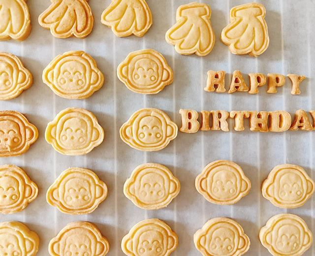

Butter Cookies

Description
This butter cookie recipe is perfect for beginners. The cookies are crispy, fragrant, and can be shaped into any design you like!
Ingredients
- 150g Butter
- 290g Cake flour
- 1 Egg
- 60g Powdered sugar
Steps
- Cut the butter into small pieces and let it soften at room temperature until it's soft enough to make an indentation with your finger.
- Beat the butter (for about 40 seconds) using the low-speed setting on your mixer.
- Sift in the powdered sugar.
- Mix with the mixer until well combined (about 30 seconds).
- Gradually add the beaten egg in two portions, mixing well each time with the mixer.
- Sift in the flour.
- Knead the mixture into a smooth dough, cover it with plastic wrap, and refrigerate for 3 hours.
- Roll out the chilled dough to the desired thickness, referencing the thickness of your cookie cutter.
- Start cutting from the edges: first cut the borders, then press the inner patterns.
- When removing the dough from the molds, take out the pattern pieces first, followed by the border pieces.
- After cutting out the entire sheet of dough, gather the remaining scraps, knead them into a dough again, roll out, and continue making cookies until the dough is used up.
- Bake at 150°C (302°F) using both the upper and lower heating elements for 20 minutes. (Adjust the time and temperature according to your oven's characteristics if necessary.)